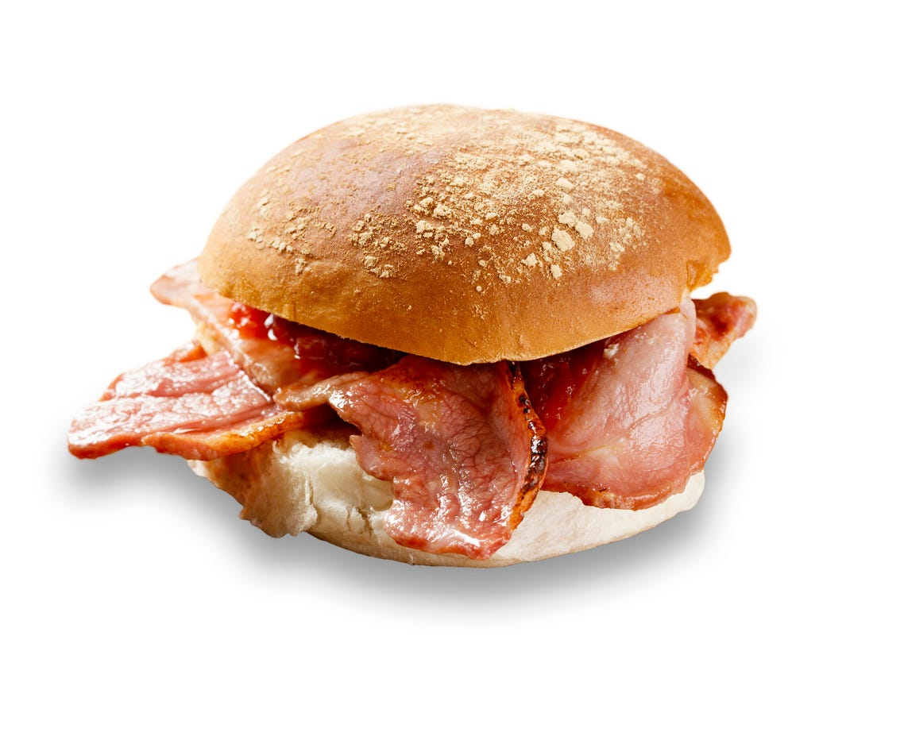

Bacon Roll

Description
Crispy bacon in a crusty white bap
Ingredients
- 1 crusty white bap
- 5g salted butter, spreadable
- 2 rashers of unsmoked bacon
- optional - 1 tblsp ketchup
Steps
- Cook the bacon until crispy
- Cut the roll open and spread butter evenly on both cut sides
- Place cooked bacon inside the roll
- Optional - add ketchup
- Close the roll and enjoy!